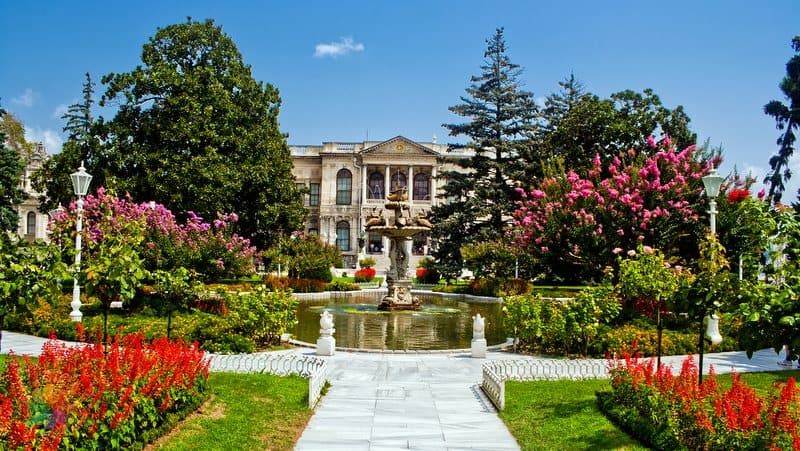
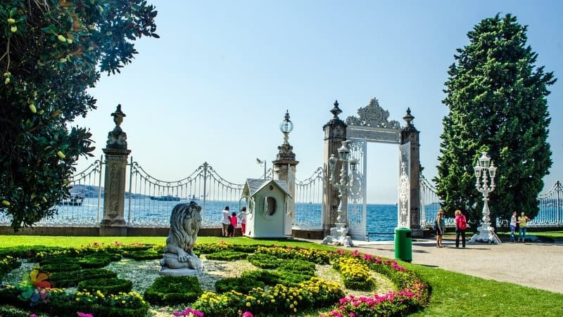
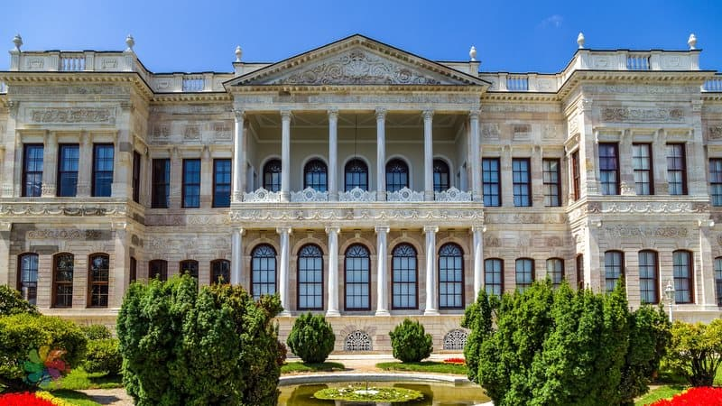
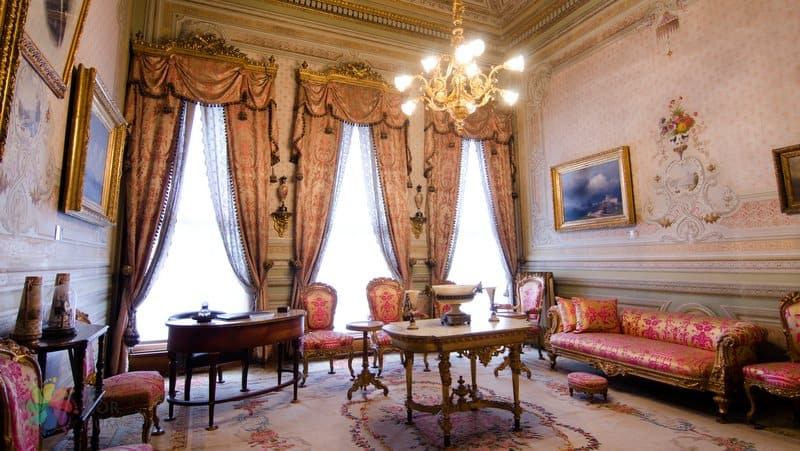
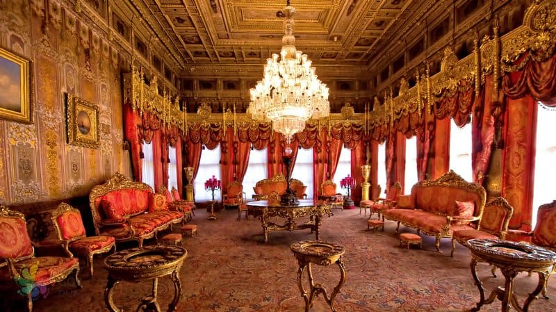
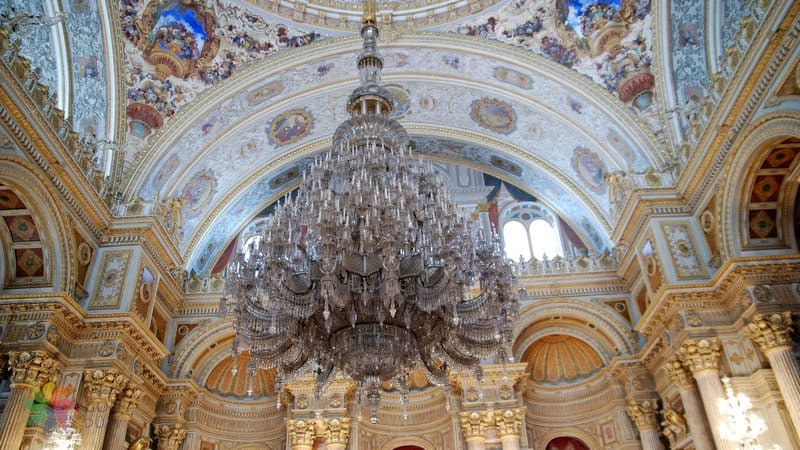
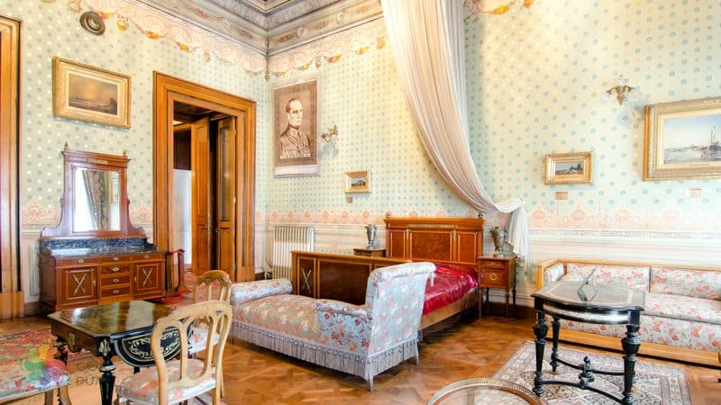

Dolmabahçe Sarayı Müzesi
AçıklamaBir 19. Yüzyıl Sarayı; DolmabahçeDolmabahçe Sarayı’nın bulunduğu Beşiktaş sahil bölgesi, geçmişte Boğaziçi’nin koylarından biri olarak gemicilik faaliyetlerine sahne olmuş bir alandır. Antik çağlardan itibaren gemilerin sığındığı doğal liman olan bu koy, Bizans Dönemi’nde de yöneticilerin ilgisine mazhar olmuş ve bu bölgede kraliyet sarayları inşa edilmiştir. Osmanlı Dönemi’nde donanma gemilerinin demirlendikleri ve denizcilik törenlerinin yapıldığı bir liman olarak işlev gören sahil bölgesi 16. yüzyılda doldurulmasıyla beraber “dolmabağçe” adını almıştır. Resmi ikametgâh Topkapı Sarayı olmasına karşın “dolmabağçe” bölgesi de giderek tercih edilen ziyaret yerlerinden biri olmuş, padişaha ve hanedana ait hasbahçe olarak kullanılmaya başlanmıştır. 19. yüzyıla kadar bu hasbahçe üzerinde inşa edilen köşk ve kasırlar topluluğuna “Beşiktaş Sahil Sarayı” adı verilmişti. 19. yüzyılda ise, çağın yenilenme ve modernleşme rüzgârının etkisi Osmanlı’nın kültürüne, yönetimine yansıdığı kadar saraylarına da yansımaktaydı. Bu yenileşme rüzgârının ortaya çıkardığı en görkemli eser ise bugün İstanbul’un en büyük üçüncü saray yapısı olma ünvanına da sahip olan Dolmabahçe Sarayı’dır. Sultan Abdülmecid Dönemi (1839-1861), Beşiktaş Sahil Sarayı yapılarının işlevsellik açısından eksik kaldığının hissedildiği bir dönemdir. Bu yapılar yıktırılarak yerine Dolmabahçe Sarayı’nın yaptırılmasına karar verilir. 13 Haziran 1843 yılında inşasına başlanan Dolmabahçe Sarayı, 7 Haziran 1856’da kullanıma açılmıştır. 110 bin metrekarelik bir alanda, Boğaz’a nazır muhteşem bir manzaranın hakimi konumda yer almaktadır.  Ön tarafındaki geniş koyun 17. yüzyıldan itibaren doldurulması ile eğlence ve dinlenme alanlarını barındıran has bahçesi oluşturulmuş Beşiktaş Sahil Sarayı’nın arazisi üzerine inşa edilen yapının görkemi, sahip olduğu mimari üsluptan geliyor. Bu etkiyi sağlamak için Ermeni asıllı Balyan Ailesi sarayı inşa ederken geleneksel Osmanlı mimarisini Rokoko, Barok ve Neo-Klasik gibi batı kökenli yaklaşımlarla sentezlemiş.  Sarayı mimarisi dışında ihtişamlı kılan bir diğer önemli unsursa, iç dekorasyonunda kullanılan eşyalar. Dünyanın en büyük saray içi balo salonuna sahip yapının odalarını rehberli turlar aracılığıyla gezerken bu ihtişamı sağlayan mobilyaları, perdeleri, halıları ve tabloları yakından inceleyebilirsiniz.  Tamamlanmasının ardından hanedan tarafından artık yetersiz hale geldiği düşünülen Topkapı Sarayı yerine kullanılmaya başlanan Dolmabahçe, 1924 yılına kadar Osmanlı’nın yönetim merkeziymiş. Osmanlı Hanedanı’nın yurdu terk ettikten sonra tüm malvarlıkları Türk Halkı’nın mülkiyetine geçen saray, 1927-1949 yılları arasında Cumhurbaşkanlığı makamı olarak hizmet vermiş. Uzun süre protokole ve halkın ziyaretine kısmen açık tutulan yapı, 1984’te “müze-saray” haline getirilmiş. Dolmabahçe Sarayı Bölümleri  Tasarımında Avrupa’nın büyük sarayları örnek alınan Dolmabahçe’nin ana binası Selamlık (Mâbeyn-i Hümayun), Tören Salonu (Muâyede Salonu) ve Harem-i Hümayun olmak üzere 3 kısımdan oluşuyor. Devletin iç ve dış işlerinin yürütüldüğü Mâbeyn, ana binanın en görkemli bölümü olarak ziyaretçilerini büyülüyor. Girişte yer alan Medhal Salon; üst kata erişimin sağlandığı Kristal Merdiven; elçilerin ağırlandığı Süferâ Salonu ve padişahın ziyaretçileri kabul ettiği Kırmızı Oda, sarayın Selamlık kısmında mutlaka görmenizi tavsiye edeceğim alanlar. Ayrıca bu bölümün üst katında, padişahın kendi özel odasına geçişine imkân veren Zülvecheyn Salonu yer alıyor. Tamamlandığı 1856 yılından 1924’e kadar 6 padişah ve 1 Osmanlı Halifesi tarafından kullanılan yapının Harem kısmı, öncesinde inşa edilen Topkapı Sarayı gibi türdeşlerinden farklı olarak ana binanın bir parçası olacak şekilde düzenlenmiş. Osmanlı zamanında “Valide Sultan Divanhanesi” ve “Balkonlu Sofa” olarak da adlandırılan Pembe Salon, iç dekorasyonunun zenginliği ile öne çıkıyor. Valide Sultan’ın ve kadın efendilerin davetler için kullandıkları salon tam boy Hereke halıları, Avrupalı ressamlar tarafından çizilmiş kadın portreleri ile süslenmiş.  Selamlık ile Harem arasındaki Muâyede Salonu, 2.000 metrekareyi aşan alanı ve 36 metre yüksekliğindeki kubbesi sayesinde oldukça görkemli bir görünüm sergiliyor. Salonun ortasındaki, İngiltere’den getirilen avize özellikle görülmeye değer.  285 odalı ve 43 salonlu Dolmabahçe Sarayı’nın en özel bölümünü ise Türkiye Cumhuriyeti’nin kurucusu, ulu önderimiz Mustafa Kemal Atatürk’ün Yatak Odası oluşturuyor. Atamız’ın 10 Kasım 1938’de hayata gözlerini yumduğu bu oda zaman durmuşçasına, kullanımda olduğu son haliyle korunuyor.  Gezginlerin saray gezisi sırasında ilgi gösterdikleri diğer mekânlar bahçedeki Kuğulu Havuz ile iç kısımdaki kütüphane ve koleksiyonların sergilendiği salonlar. Dolmabahçe’yi ziyaretiniz sırasında oldukça değerli parçaları barındıran saat, aydınlatma araçları, hat sanatı ve yazı takımları koleksiyonlarını görme fırsatı yakalayabilirsiniz. |
|
Yaz Dönemi 1 Nisan - 31 Ekim Açılış Saati: 09:00 Kapanış Saati: 16:00 |
Kış Dönemi 31 Ekim - 1 Nisan Açılış Saati: 09:00 Kapanış Saati: 16:00 |
|
Adres: Milli Saraylar İdaresi Başkanlığı Dolmabahçe Sarayı 34357 Beşiktaş, İstanbul Tel:0 212 236 90 00 |
Giriş Ücreti : Selamlık (Tam) 60 TL Selamlık (İndirimli) 30 TL Harem (Tam) 40 TL Harem (İndirimli) 20 TL Selamlık + Harem (Tam) 90 TL Selamlık + Harem (İndirimli) 45 TL |
|
Kapalı Günler Pazartesi |